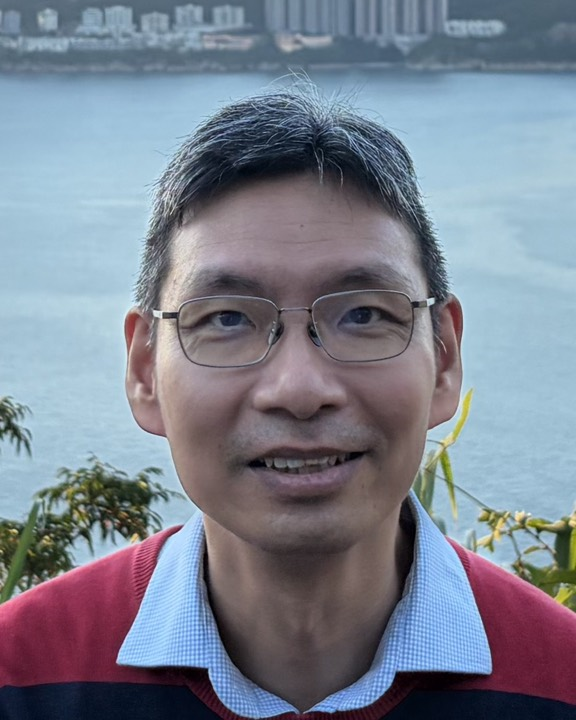

The architecture
of grammar
I study how grammatical structures shape meaning, with work on right dislocation, wh-placeholders, sentence-final particles, and telicity in Cantonese and Mandarin.
Associate ProfessorDepartment of Linguistics and Modern Languages
Exploring the structure of language, from Cantonese grammar to the possibilities of artificial intelligence.
Explore my research
I study how grammatical structures shape meaning, with work on right dislocation, wh-placeholders, sentence-final particles, and telicity in Cantonese and Mandarin.
My work draws on spoken language and corpus data to investigate grammatical variation, connecting questions about Cantonese, Mandarin, and English with linguistic typology.
My research includes linguistic annotation and machine-learning approaches to parsing, alongside interdisciplinary projects applying language analysis and AI to Alzheimer’s disease and autism.
Lawrence Y. L. Cheung · Journal of East Asian Linguistics, 24, 271–308
Lawrence Y. L. Cheung · Journal of East Asian Linguistics, 18, 197–232
Lawrence Y. L. Cheung & Longtu Zhang · English Language and Linguistics, 20(3), 559–583
I am a Hongkonger and a linguist at The Chinese University of Hong Kong. My academic training brings together English, linguistics, and computer science.
I work across theoretical and computational approaches to language, with a particular interest in Chinese linguistics. I speak Cantonese, English, and Mandarin.
Courses listed on my CUHK faculty profile.
G11, Leung Kau Kui Building
The Chinese University of Hong Kong · Shatin, Hong Kong